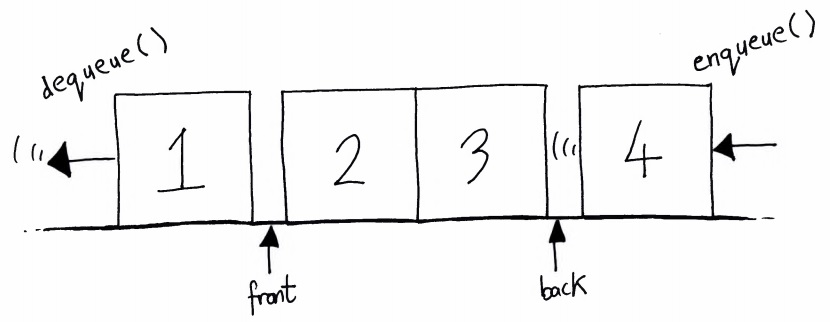

Queue
What's a queue?
Like the name suggests, a queue is a data structure that's used to model the concept of a real-world queue. Elements enter the queue at one end, the back, and leave at the other end, the front. In contrast to a stack, the first element to enter the queue is the first element to leave, unless someone jumps the queue. This is known as "First In First Out", or "FIFO".
Queues are useful data structures. Among other things, they're used:
- To create simulations of real-world queues - for example, when studying queueing theory in the field of operational research.
- As input/output buffers.
- In the implementation of the popular graph search algorithm breadth-first search.
Enqueue and dequeue
The two key operations of a queue are "enqueueing", pronounced "en-kyoo-ing", and "dequeueing", pronounced "dee-kyoo-ing". These refer to adding an element at the back of the queue and removing an element from the front of the queue, respectively. The enqueue operation is sometimes called the "offer" operation and the dequeue operation is sometimes called the "poll" operation.
Depending on the implementation and as long as we keep track of the front and back of the queue, enqueueing and dequeueing are constant-time operations. As with the stack, searching for or accessing an element at any other location in the queue is a linear-time operation.

It's interesting to note that queues can also be double-ended - that is, elements can be added at both the front
and the back. Such queues are sometimes called circular queues and the
java.util package implementation
of this is the Deque interface,
usually pronounced "dek".
The code
Like we did for the stack, we'll use the Java LinkedList implementation to implement a queue. The queue supports offer, peek and poll operations.
import java.util.LinkedList;
public class Queue<E> {
private LinkedList<E> list = new LinkedList<>();
public boolean isEmpty() {
return list.size() == 0;
}
public boolean offer(E element) {
list.addLast(element);
return true;
}
public E peek() {
if (isEmpty()) return null;
return list.peekFirst();
}
public E poll() {
if (isEmpty()) return null;
return list.removeFirst();
}
}Key takeaways
In summary, a queue is a useful linear data structure that:
- Has constant-time enqueue and dequeue operations, depending on the implementation.
- Is simple to implement.
- Has many practical applications.
- Adheres to the first in first out principle.